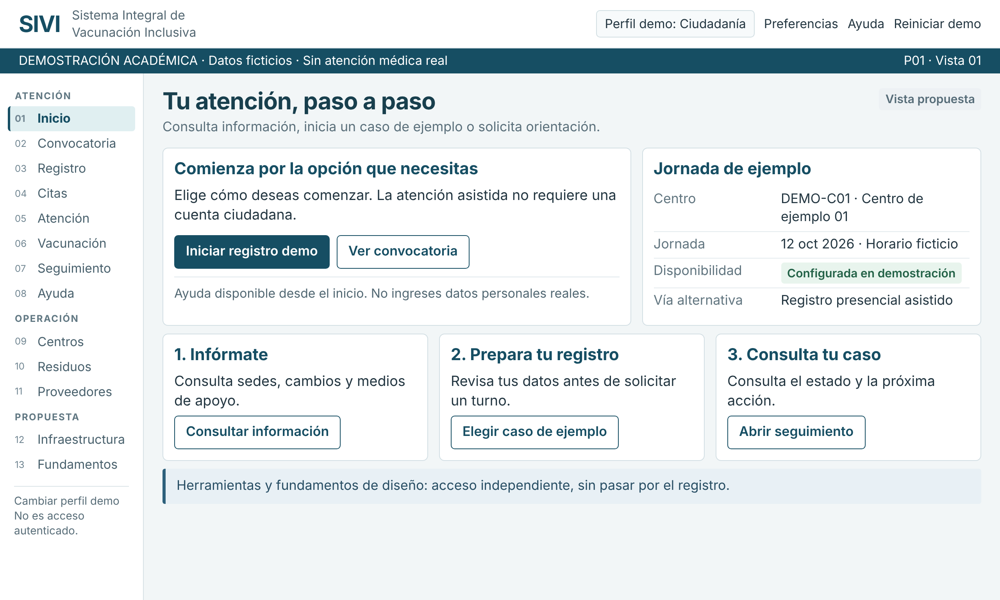

01 · Inicio · disponible
Referencia visual aprobada del proyecto. Los botones dibujados son imágenes sin comportamiento.

Presentación de la Actividad 6
El reto propone distribuir 58 millones de dosis mediante 32 centros, atender a personas de 29 a 75 años, ofrecer canales incluyentes, limitar residuos y proteger información. Los criterios se abordan como una solución integrada; los valores del caso no son resultados operativos.
Agradecimiento
Agradezco a la maestra Alba Pulido Pineda por su orientación y por los conocimientos compartidos durante la materia Diseñar para Compartir.
Las actividades me ayudaron a comprender que una solución valiosa debe considerar las necesidades de las personas, la accesibilidad, el impacto ambiental y la responsabilidad con la información. Este proyecto final reúne esos aprendizajes mediante una propuesta que busca ser clara, incluyente y útil.
Gracias por motivarnos a analizar los problemas con mayor profundidad y por acompañar nuestro proceso de aprendizaje.
Juan Carlos Perez HernándezACT_06 · SIVI · Prototipo académico · Material demostrativo con datos sintéticos